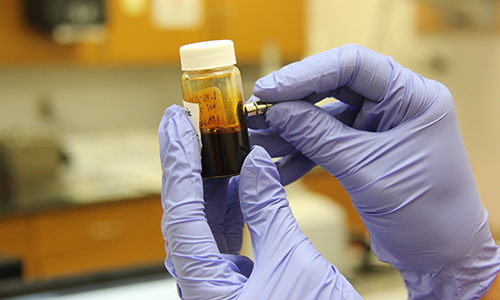
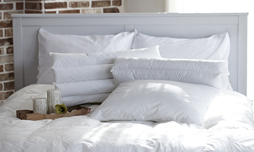

HOME > 지속가능경영 > R&D
R&D
지속가능한 환경을 위한 연구개발에 앞장서겠습니다
한샘은 환경안전 전담기관인 생활환경 기술연구소를 통해
각종 유해물질 시험기기 등
장비를 대폭 보강하는 등 환경 투자를 강화했습니다.
연구소에서는 제품에 사용되는 엄격한 유해물질 관리기준을 제시하고 실내 공기질 관련 연구개발과
자재 및 포장재의 재활용률을 높일 수 있는 소재 개선 연구개발 등을 진행하고 있습니다.
생활환경기술연구소

| 안산분소 | 1350m2 (400평부지) / 건물 2개동 (2150m2 / 650평) |
|---|---|
| 소재 ・ 공법 연구개발 / 시제품 제작 / 시험보증 / 신 기술 개발 | |
| 상암사옥 | SPEC ・ 기기 개발 / 환경 ・ 안전 ・ 품질보증 / 기준정보 / 홈 IoT |
| 연구소 | 1991년 | 생산기술 개발팀 |
|---|---|---|
| 2005년 | 기업부설 연구소 등록 | |
| 소재/공법 개발, 빌트인가구 S/T개발 (각종 특허 기술 개발 적용) | ||
| 나노포일 /나노패트 키친바흐, 미국 / 일본 SPEC 개발 | ||
| 시험실 | 1982년 | 현 수암물류센터 시험실 (완제품 구조력 테스트) |
| 1983년 | KS인증 | |
| 1992년 | 기능 및 물성시험 (규모확대) | |
| 힌지개폐 / 황변 / 스크래치 | ||
| 뒤턱 견고성 / 서랍개폐 | ||
| 강성 시험기, 열풍 건조기 |
특허 및 보유장비

| 년도 | 특허내용 |
|---|---|
| 2015년도 | 가구 표면 마감시트 및 이의 제조방법 |
| 디스플레이가 구비된 주방용 가구 및 시스템 | |
| 판재 홈가공 및 이송장치 | |
| 조립가구 및 제조방법 | |
| 접철 구조를 갖는 가구용 판재 및 그 제조방법 | |
| 영구자석을 이용한 가구재의 조립구조 | |
| 수납장의 판재 조립구조 | |
| 2016년도 | 수납박스 |
| 가구재용 하이그로시 패널의 제조방법 | |
| 내마모성이 우수한 가구용 경량패널의 제조방법 | |
| 반자동 스피커가 장착된 책상 | |
| 조립실 욕실용 하이브리드 벽판넬 시공구조 | |
| 시공, 철거 및 유지보수가 용이한 비접착식 바닥밀착형 조립실 마루판 | |
| 친환경 욕실용 선반 유닛 및 그 시공방법 | |
| 2017년도 | 휴대단말기를 이용한 조명제어시스템 및 이를 이용한 조명제어방법 |
| 인체공학적 높이조절 및 각도조절이 가능한 기능성 책상 | |
| 다중 도어개폐 연동장치 |
| 구분 | 시험설비 | 내용 |
|---|---|---|
| 환경 | 소형챔버 | 성형자재 TVOC 검증 |
| 대형챔버 | 완제품 TVOC 검증 | |
| 라돈 검출기 | 방사선 물질 검출 | |
| ICP 분석기 | 중금속 함유량 검증 | |
| 소파 | 마찰 견뢰도 | 가죽까짐 검증 |
| 땀 견뢰도 | 변퇴색 여부 검증 | |
| 압축영구 줄임율 | 스폰지 꺼짐 검증 | |
| 매트리스 | 내구성 | 스프링 내구성 검증 |
| 구름식 내구성 | 꺼짐 및 변형 검증 | |
| 도어 | 미닫이문 내구성 | 도어 탈착, 휨 검증 |
| 방문세트 구조력 | 방문 구조력 검증 | |
| 기타 | Q-UV 내후성 | 내후성 검증 |
| 부엌 몸통 안정성 | 구조력 검증 | |
| 염수분무 시험기 | 내식성 검증 | |
| 냄새 측정기 | 감성품질 검증 |